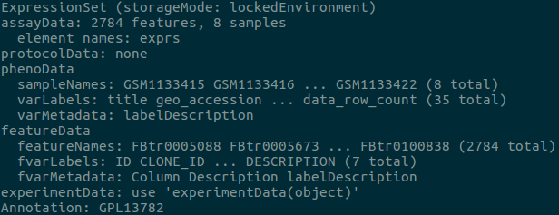

Whenever you use R to deal with high-throughput sequencing data you will without a doubt run into complex data-frame objects. These objects essentially take all the information from the HTS experiment and store it into a single object.
Below is an example of such an object:

The expressionSet object is often used for Microarray data but different types of data anaysis packages may create other names for their object. All in all each of these different object types are simply a way to store multiple data types into a single object. I will now discuss how to subset the data from the object in the image shown above.
The first thing to do would be to understand the meaning behind each of
the names. For example, under phenoData we can see that there
is sampleNames, varLabels and varMetadata.
If you want to see the types of data stored in sampleNames you
would need to type in sampleNames(chr2L).
Note: chr2L is the name that this particular expressionSet
object is identified by.